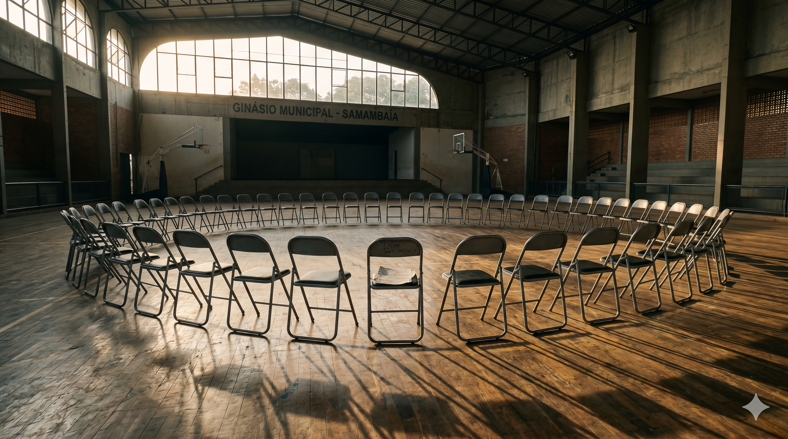

Uma vida muda quando
alguém decide destinar.
A jornada de quem recebe o seu IR.

O começo
Um jovem entra
Um jovem entra
no ginásio pela primeira vez.
De Ceilândia, Samambaia ou Santa Maria. Nunca tocou um instrumento. Mas aceitou o convite. A partir daí, tudo muda.

O processo
Semana após semana,
Semana após semana,
o instrumento vira extensão.
Ensaios toda semana. Professor presente. Disciplina, trabalho em equipe, identidade. Isso é o que o seu IR financia, diretamente.
O resultado
Ele está no palco.
Ele está no palco.
A sala está cheia.
Seis concertos públicos gratuitos por ano. A família na plateia. A periferia no palco. Foi o seu IR que tornou isso possível.